更多角色 · 227 隻
每隻放一段主動作（idle 優先）。用 -c <id> 叫它，--anims 看全部動作。
2 Wild 2 Die
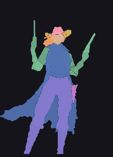
cowgirl2_wild_2_die__cowgirl每個零件一張圖 · 動作 41 段 · 99.88%3 Cursed Chests Hold Win
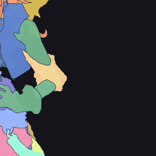
character3_cursed_chests_hold_win__character每個零件一張圖 · 動作 5 段 · 99.95%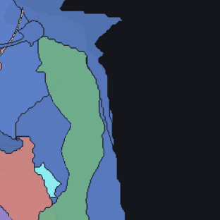
character bonus3_cursed_chests_hold_win__character_bonus每個零件一張圖 · 動作 5 段 · 99.78%Aiko And The Wind Spirit
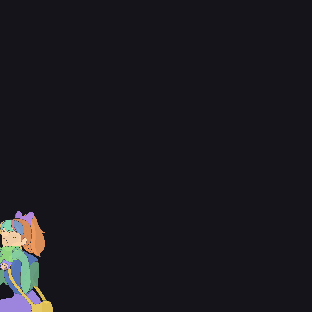
characteraiko_and_the_wind_spirit__character每個零件一張圖 · 動作 40 段 · 99.78%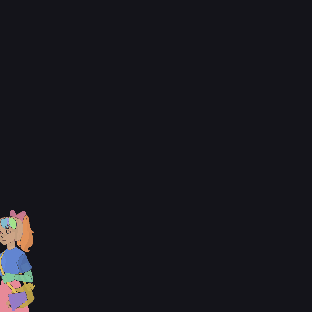
character bonus 1aiko_and_the_wind_spirit__character_bonus_1每個零件一張圖 · 動作 11 段 · 99.94%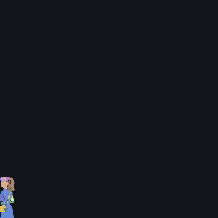
character bonus 2aiko_and_the_wind_spirit__character_bonus_2每個零件一張圖 · 動作 4 段 · 99.88%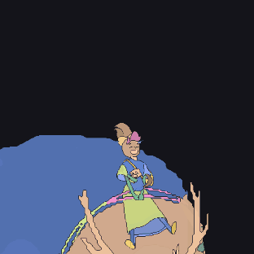
character epic bonusaiko_and_the_wind_spirit__character_epic_bonus每個零件一張圖 · 動作 4 段 · 100.00%Arizona James And The Lost Relics
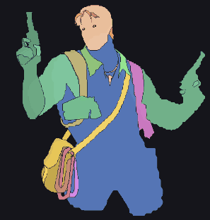
character epic bonusarizona_james_and_the_lost_relics__character__epic_bonus每個零件一張圖 · 動作 12 段 · 99.94%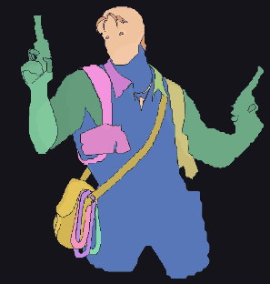
character main gamearizona_james_and_the_lost_relics__character__main_game每個零件一張圖 · 動作 12 段 · 99.95%Army Of Ares
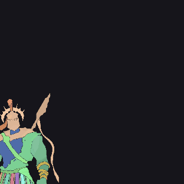
characterarmy_of_ares__character每個零件一張圖 · 動作 14 段 · 96.43%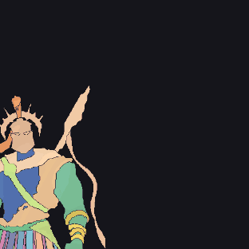
character bonus 1army_of_ares__character_bonus_1每個零件一張圖 · 動作 14 段 · 99.59%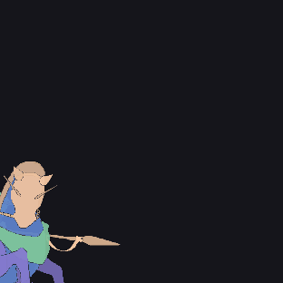
character bonus 2army_of_ares__character_bonus_2每個零件一張圖 · 動作 8 段 · 98.96%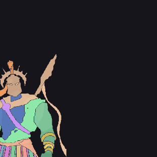
character bonus 3army_of_ares__character_bonus_3每個零件一張圖 · 動作 14 段 · 99.57%Bash Bros
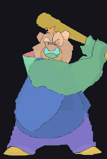
bearbash_bros__bear每個零件一張圖 · 動作 14 段 · 99.77%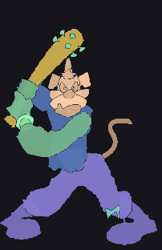
dogbash_bros__dog每個零件一張圖 · 動作 8 段 · 98.35%Beam Boys
cat boybeam_boys__cat_boy每個零件一張圖 · 動作 32 段 · 98.88%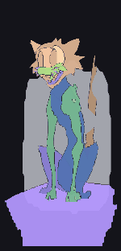
cat characterbeam_boys__cat_character每個零件一張圖 · 動作 21 段 · 96.19%cat character mobile headbeam_boys__cat_character_mobile_head每個零件一張圖 · 動作 38 段 · 96.64% Beast Below
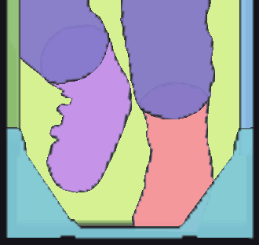
diver full expendbeast_below__diver_full_expend一張全身圖 · 動作 7 段 · 100.00%siren epicbeast_below__siren_epic一張全身圖 · 動作 17 段 · 100.00% siren nonconsistent
siren nonconsistentbeast_below__siren_nonconsistent每個零件一張圖 · 動作 17 段 · 91.57%Booze Bash
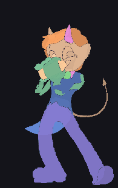
barkeeperbooze_bash__barkeeper每個零件一張圖 · 動作 12 段 · 99.84%Bouncy Bombs
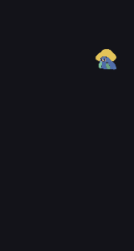
character portraitbouncy_bombs__character_portrait一張全身圖 · 動作 5 段 · 99.87%left characterbouncy_bombs__left_character一張全身圖 · 動作 3 段 · 99.51%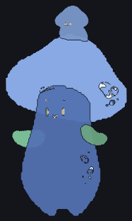
right characterbouncy_bombs__right_character每個零件一張圖 · 動作 8 段 · 99.75%Bullets And Bounty
bountybullets_and_bounty__bounty每個零件一張圖 · 動作 24 段 · 0.00%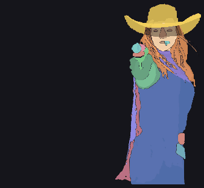
epic bonus girlbullets_and_bounty__epic_bonus_girl每個零件一張圖 · 動作 10 段 · 97.88% girl maingame
girl maingamebullets_and_bounty__girl_maingame每個零件一張圖 · 動作 6 段 · 99.90% Cash Crew
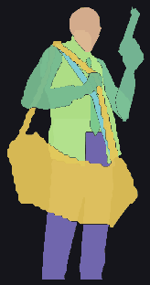
red robbercash_crew__red_robber每個零件一張圖 · 動作 7 段 · 99.92%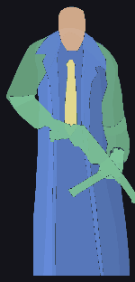
yellow robbercash_crew__yellow_robber一張全身圖 · 動作 5 段 · 99.44%Chaos Crew 2
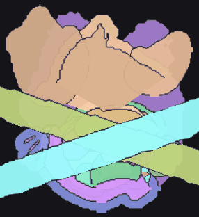
catchaos_crew_2__cat每個零件一張圖 · 動作 24 段 · 99.78%crankychaos_crew_2__cranky每個零件一張圖 · 動作 9 段 · 99.75%sketchychaos_crew_2__sketchy每個零件一張圖 · 動作 8 段 · 99.29%skullchaos_crew_2__skull每個零件一張圖 · 動作 24 段 · 99.99%Chaos Crew 3
crankychaos_crew_3__cranky每個零件一張圖 · 動作 8 段 · 99.72%dogchaos_crew_3__dog每個零件一張圖 · 動作 9 段 · 99.37%dog cat skullchaos_crew_3__dog_cat_skull每個零件一張圖 · 動作 43 段 · 95.62%sketchychaos_crew_3__sketchy每個零件一張圖 · 動作 9 段 · 99.76%
Circle Of Life
hand statuecircle_of_life__hand_statue每個零件一張圖 · 動作 12 段 · 99.99%
Cloud Princess
characterscloud_princess__characters每個零件一張圖 · 動作 17 段 · 99.77%
Cursed Crypt
tutancursed_crypt__tutan每個零件一張圖 · 動作 11 段 · 99.82%tutan epicwincursed_crypt__tutan_epicwin每個零件一張圖 · 動作 9 段 · 99.82%
Danny Dollar
danny characterdanny_dollar__danny_character每個零件一張圖 · 動作 6 段 · 99.46%
Dark Spiral
bonus 1 characterdark_spiral__bonus_1_character每個零件一張圖 · 動作 13 段 · 99.88%bonus 3 characterdark_spiral__bonus_3_character每個零件一張圖 · 動作 6 段 · 96.57%
Dark Summoning
demondark_summoning__demon每個零件一張圖 · 動作 7 段 · 98.67%priestdark_summoning__priest每個零件一張圖 · 動作 24 段 · 99.94%
Dawn Of Kings
anubisdawn_of_kings__anubis一張全身圖 · 動作 10 段 · 99.98%bastetdawn_of_kings__bastet一張全身圖 · 動作 11 段 · 100.00%characterdawn_of_kings__character每個零件一張圖 · 動作 11 段 · 99.90%girldawn_of_kings__girl每個零件一張圖 · 動作 10 段 · 100.00%
Deal With Death
characterdeal_with_death__character每個零件一張圖 · 動作 47 段 · 98.91%character bonusdeal_with_death__character_bonus每個零件一張圖 · 動作 49 段 · 99.85%
Death Becomes You
characterdeath_becomes_you__character每個零件一張圖 · 動作 27 段 · 99.95%
Divine Drop
cerberusdivine_drop__cerberus每個零件一張圖 · 動作 2 段 · 99.97%hadesdivine_drop__hades每個零件一張圖 · 動作 4 段 · 99.77%heradivine_drop__hera每個零件一張圖 · 動作 3 段 · 99.95%zeusdivine_drop__zeus每個零件一張圖 · 動作 3 段 · 99.32%
Donny And Danny
dnny dannydonny_and_danny__dnny__danny每個零件一張圖 · 動作 11 段 · 96.46%dnny danny kingdonny_and_danny__dnny__danny_king每個零件一張圖 · 動作 11 段 · 99.62%dnny donnydonny_and_danny__dnny__donny每個零件一張圖 · 動作 11 段 · 99.97%dnny donny kingdonny_and_danny__dnny__donny_king每個零件一張圖 · 動作 11 段 · 99.88%donny takeoverdonny_and_danny__donny_takeover每個零件一張圖 · 動作 3 段 · 100.00%
Donny Dough
bonus handsdonny_dough__bonus_hands一張全身圖 · 動作 6 段 · 99.88%characterdonny_dough__character每個零件一張圖 · 動作 11 段 · 99.65%
Donut Division
characterdonut_division__character每個零件一張圖 · 動作 81 段 · 36.75%
Dorks Of The Deep
crab bonus2 spinedorks_of_the_deep__crab_bonus2_spine每個零件一張圖 · 動作 14 段 · 99.72%mermaid bonus2 spinedorks_of_the_deep__mermaid_bonus2_spine一張全身圖 · 動作 5 段 · 99.98%neptune bonus3dorks_of_the_deep__neptune_bonus3一張全身圖 · 動作 7 段 · 100.00%neptune maingamedorks_of_the_deep__neptune_maingame每個零件一張圖 · 動作 11 段 · 99.90%octopus bonus3dorks_of_the_deep__octopus_bonus3每個零件一張圖 · 動作 9 段 · 100.00%octopus maindorks_of_the_deep__octopus_main一張全身圖 · 動作 6 段 · 99.87%
Dr Zappo
eyedr_zappo__eye每個零件一張圖 · 動作 24 段 · 100.00%mr braindr_zappo__mr_brain一張全身圖 · 動作 3 段 · 99.77%mr eyedr_zappo__mr_eye每個零件一張圖 · 動作 2 段 · 99.93%zappo and monkey zappo with monkeydr_zappo__zappo_and_monkey__zappo_with_monkey一張全身圖 · 動作 2 段 · 99.94%zappo and monkey zappo without monkeydr_zappo__zappo_and_monkey__zappo_without_monkey一張全身圖 · 動作 2 段 · 99.93%
Dragons Domain
dragondragons_domain__dragon每個零件一張圖 · 動作 12 段 · 99.71%dragonsdragons_domain__dragons每個零件一張圖 · 動作 6 段 · 83.90%knightdragons_domain__knight每個零件一張圖 · 動作 5 段 · 99.94%small dragonsdragons_domain__small_dragons每個零件一張圖 · 動作 8 段 · 99.61%
Drop Em
cannydrop_em__canny每個零件一張圖 · 動作 22 段 · 99.21%mona leftdrop_em__mona_left每個零件一張圖 · 動作 14 段 · 93.64%mona rightdrop_em__mona_right每個零件一張圖 · 動作 14 段 · 92.97%
Duel At Dawn
characterduel_at_dawn__character每個零件一張圖 · 動作 8 段 · 99.67%
Dusk Princess
characterdusk_princess__character每個零件一張圖 · 動作 18 段 · 99.89%
Dynasty Of Death
cerberusdynasty_of_death__cerberus一張全身圖 · 動作 4 段 · 99.69%hades basedynasty_of_death__hades_base每個零件一張圖 · 動作 17 段 · 99.32%hades bonusdynasty_of_death__hades_bonus一張全身圖 · 動作 4 段 · 99.73%persephone basedynasty_of_death__persephone_base每個零件一張圖 · 動作 17 段 · 99.91%persephone bonusdynasty_of_death__persephone_bonus每個零件一張圖 · 動作 4 段 · 99.89%
Epic Bullets And Bounty
 bounty
bountyepic_bullets_and_bounty__bounty每個零件一張圖 · 動作 24 段 · 0.00% epic bonus girl
epic bonus girlepic_bullets_and_bounty__epic_bonus_girl每個零件一張圖 · 動作 10 段 · 97.88%girl maingameepic_bullets_and_bounty__girl_maingame每個零件一張圖 · 動作 6 段 · 99.90%Epic Ze Zeus
zeusepic_ze_zeus__zeus每個零件一張圖 · 動作 11 段 · 96.74%zeus mobileepic_ze_zeus__zeus_mobile每個零件一張圖 · 動作 11 段 · 95.99%
Eternal Duel
hades bonus 1eternal_duel__hades_bonus_1每個零件一張圖 · 動作 2 段 · 99.97%hades maingameeternal_duel__hades_maingame每個零件一張圖 · 動作 3 段 · 99.99%zeus bonus 2eternal_duel__zeus_bonus_2每個零件一張圖 · 動作 2 段 · 100.00%zeus maingameeternal_duel__zeus_maingame每個零件一張圖 · 動作 2 段 · 99.98%
Evil Eyes
evil eyeevil_eyes__evil_eye每個零件一張圖 · 動作 44 段 · 99.97%spookyevil_eyes__spooky每個零件一張圖 · 動作 12 段 · 99.66%spooky greyevil_eyes__spooky_grey每個零件一張圖 · 動作 14 段 · 99.65%
Eye Of Medusa
character knighteye_of_medusa__character_knight每個零件一張圖 · 動作 5 段 · 99.30%character medusaeye_of_medusa__character_medusa每個零件一張圖 · 動作 9 段 · 99.12%
Eye Of The Panda
pandaeye_of_the_panda__panda一張全身圖 · 動作 10 段 · 99.92%
Feel The Beat
blue shufflefeel_the_beat__blue_shuffle每個零件一張圖 · 動作 10 段 · 99.99%pink shufflefeel_the_beat__pink_shuffle每個零件一張圖 · 動作 9 段 · 99.98%
Fighter Pit
team greenfighter_pit__team_green每個零件一張圖 · 動作 31 段 · 89.27%team green pfighter_pit__team_green_p每個零件一張圖 · 動作 12 段 · 99.10%team redfighter_pit__team_red每個零件一張圖 · 動作 31 段 · 100.00%team red pfighter_pit__team_red_p每個零件一張圖 · 動作 12 段 · 97.63%
Fire My Laser
aliensfire_my_laser__aliens每個零件一張圖 · 動作 7 段 · 96.34%space marinefire_my_laser__space_marine每個零件一張圖 · 動作 62 段 · 99.58%
Fist Of Destruction Megamultiplier
characters blue teamfist_of_destruction_megamultiplier__characters_blue_team每個零件一張圖 · 動作 23 段 · 91.17%characters red teamfist_of_destruction_megamultiplier__characters_red_team每個零件一張圖 · 動作 24 段 · 90.04%portrait blue teamfist_of_destruction_megamultiplier__portrait_blue_team每個零件一張圖 · 動作 14 段 · 99.99%portrait red teamfist_of_destruction_megamultiplier__portrait_red_team每個零件一張圖 · 動作 14 段 · 100.00%
Freds Food Truck
fredfreds_food_truck__fred每個零件一張圖 · 動作 22 段 · 99.92%
Frkn Bananas
bananamanfrkn_bananas__bananaman每個零件一張圖 · 動作 8 段 · 99.67%peelmanfrkn_bananas__peelman每個零件一張圖 · 動作 6 段 · 99.13%
Get The Cheese
birdget_the_cheese__bird每個零件一張圖 · 動作 12 段 · 98.97%mouseget_the_cheese__mouse每個零件一張圖 · 動作 20 段 · 99.80%
Great Game Rockies
character spinegreat_game_rockies__character_spine每個零件一張圖 · 動作 11 段 · 99.92%
Great Game Serengeti
charactergreat_game_serengeti__character每個零件一張圖 · 動作 11 段 · 99.76%
Grug Make Fire
character neandergrug_make_fire__character_neander一張全身圖 · 動作 8 段 · 99.95%
Hot Ross
hot rosshot_ross__hot_ross每個零件一張圖 · 動作 25 段 · 97.76%
Hounds Of Hell
houndhounds_of_hell__hound每個零件一張圖 · 動作 14 段 · 99.81%
Immortal Desire
vamp 1immortal_desire__vamp_1每個零件一張圖 · 動作 3 段 · 98.96%vamp 2immortal_desire__vamp_2每個零件一張圖 · 動作 3 段 · 96.05%vamp 3immortal_desire__vamp_3每個零件一張圖 · 動作 3 段 · 95.78%vamp 4immortal_desire__vamp_4每個零件一張圖 · 動作 3 段 · 99.83%
Invictus
statue 1invictus__statue_1每個零件一張圖 · 動作 10 段 · 98.15%statue 2invictus__statue_2每個零件一張圖 · 動作 9 段 · 96.97%
Jaws Of Justice
characterjaws_of_justice__character每個零件一張圖 · 動作 20 段 · 99.95%
Jelly Slice
characterjelly_slice__character每個零件一張圖 · 動作 8 段 · 99.92%
Keep Em
cannykeep_em__canny每個零件一張圖 · 動作 22 段 · 98.77%fogel birdkeep_em__fogel_bird每個零件一張圖 · 動作 14 段 · 99.54%
Klowns
clownklowns__clown每個零件一張圖 · 動作 26 段 · 99.01%
Le Bunny
raccoonle_bunny__raccoon每個零件一張圖 · 動作 30 段 · 99.97%
Le Cowboy
smokeyle_cowboy__smokey每個零件一張圖 · 動作 46 段 · 98.19%
Le Digger
smokey epic gamele_digger__smokey__epic_game每個零件一張圖 · 動作 30 段 · 99.83%smokey main gamele_digger__smokey__main_game每個零件一張圖 · 動作 30 段 · 99.83%
Le Fisherman
smokey basele_fisherman__smokey__base每個零件一張圖 · 動作 19 段 · 99.95%smokey bonusle_fisherman__smokey__bonus每個零件一張圖 · 動作 19 段 · 99.95%smokey epic bonusle_fisherman__smokey__epic_bonus每個零件一張圖 · 動作 19 段 · 99.73%
Le King
raccoonle_king__raccoon每個零件一張圖 · 動作 37 段 · 99.85%
Le Pharaoh
raccoonle_pharaoh__raccoon每個零件一張圖 · 動作 33 段 · 99.96%
Le Santa
raccoonle_santa__raccoon每個零件一張圖 · 動作 50 段 · 99.58%
Le Sortudo
smokeyle_sortudo__smokey每個零件一張圖 · 動作 9 段 · 99.88%
Le Viking
smokeyle_viking__smokey每個零件一張圖 · 動作 22 段 · 99.94%
Le Zeus
smokeyle_zeus__smokey每個零件一張圖 · 動作 34 段 · 99.83%
Magic Piggy Og
piggy runningmagic_piggy_og__piggy_running每個零件一張圖 · 動作 7 段 · 99.61%
Marlin Masters Atlantis
kraken krakenmarlin_masters_atlantis__kraken__kraken每個零件一張圖 · 動作 4 段 · 100.00%statuemarlin_masters_atlantis__statue每個零件一張圖 · 動作 13 段 · 99.47%
Mayan Stackways
monstermayan_stackways__monster每個零件一張圖 · 動作 12 段 · 98.29%
Minted Mike
mikeminted_mike__mike每個零件一張圖 · 動作 9 段 · 99.99%policeminted_mike__police一張全身圖 · 動作 5 段 · 100.00%
Munchy Milo
charactermunchy_milo__character每個零件一張圖 · 動作 18 段 · 99.97%
Nitro Nights
carnitro_nights__car每個零件一張圖 · 動作 11 段 · 99.72%
Octo Attack
octopusocto_attack__octopus每個零件一張圖 · 動作 17 段 · 97.55%
Orb Of Destiny
fortune tellerorb_of_destiny__fortune_teller每個零件一張圖 · 動作 20 段 · 99.98%
Phoenix Duelreels
dragon bonus1phoenix_duelreels__dragon_bonus1每個零件一張圖 · 動作 6 段 · 99.74%dragon maingamephoenix_duelreels__dragon_maingame每個零件一張圖 · 動作 6 段 · 99.89%phoenix bonus2phoenix_duelreels__phoenix_bonus2每個零件一張圖 · 動作 7 段 · 99.94%phoenix maingamephoenix_duelreels__phoenix_maingame每個零件一張圖 · 動作 3 段 · 97.19%resurrectionphoenix_duelreels__resurrection每個零件一張圖 · 動作 3 段 · 99.99%
Pray For Six
bossdevilpray_for_six__bossdevil每個零件一張圖 · 動作 11 段 · 99.70%devils babypray_for_six__devils_baby每個零件一張圖 · 動作 4 段 · 99.92%dogpray_for_six__dog每個零件一張圖 · 動作 6 段 · 99.38%
Pray For Three
left girlpray_for_three__left_girl每個零件一張圖 · 動作 5 段 · 99.45%right girlpray_for_three__right_girl每個零件一張圖 · 動作 12 段 · 99.78%
Rad Maxx
maxxrad_maxx__maxx每個零件一張圖 · 動作 18 段 · 98.23%
Rainbow Princess
characterrainbow_princess__character每個零件一張圖 · 動作 8 段 · 93.76%character epic bonusrainbow_princess__character_epic_bonus每個零件一張圖 · 動作 5 段 · 99.76%
Red Rascal
characterred_rascal__character一張全身圖 · 動作 6 段 · 99.84%
Reign Of Rome
characterreign_of_rome__character一張全身圖 · 動作 10 段 · 99.76%
Rip City
maxxrip_city__maxx每個零件一張圖 · 動作 17 段 · 98.30%rossrip_city__ross每個零件一張圖 · 動作 17 段 · 97.64%
Rise Of Fortuna
characterrise_of_fortuna__character每個零件一張圖 · 動作 21 段 · 99.71%
Rise Of Ymir
fg1rise_of_ymir__fg1每個零件一張圖 · 動作 8 段 · 99.97%fg2rise_of_ymir__fg2每個零件一張圖 · 動作 8 段 · 100.00%ymirrise_of_ymir__ymir每個零件一張圖 · 動作 15 段 · 99.17%
Ronin Stackways
ghost monkeyronin_stackways__ghost_monkey每個零件一張圖 · 動作 6 段 · 99.80%
Rusty And Curly
curlyrusty_and_curly__curly每個零件一張圖 · 動作 9 段 · 99.87%curly bigrusty_and_curly__curly_big每個零件一張圖 · 動作 8 段 · 99.99%roosterrusty_and_curly__rooster每個零件一張圖 · 動作 3 段 · 99.91%rustyrusty_and_curly__rusty每個零件一張圖 · 動作 10 段 · 99.93%
Sand And Ashes
mummysand_and_ashes__mummy每個零件一張圖 · 動作 9 段 · 99.62%
Shaolin Master
character 1shaolin_master__character_1每個零件一張圖 · 動作 3 段 · 99.66%character 2shaolin_master__character_2每個零件一張圖 · 動作 3 段 · 99.26%
Sixsixsix
boss devilsixsixsix__boss_devil每個零件一張圖 · 動作 11 段 · 99.73%left devilsixsixsix__left_devil每個零件一張圖 · 動作 3 段 · 99.71%right devilsixsixsix__right_devil每個零件一張圖 · 動作 6 段 · 99.69%
Slayers Inc
charactersslayers_inc__characters每個零件一張圖 · 動作 49 段 · 98.51%
Slots
smokeyslots__smokey每個零件一張圖 · 動作 23 段 · 99.07%
Smoking Dragon
charactersmoking_dragon__character每個零件一張圖 · 動作 13 段 · 98.53%
Snow Slingers
rupertsnow_slingers__rupert每個零件一張圖 · 動作 4 段 · 99.98%ruthsnow_slingers__ruth每個零件一張圖 · 動作 4 段 · 100.00%
Spear Of Athena
athena bonusspear_of_athena__athena_bonus每個零件一張圖 · 動作 12 段 · 99.62%characterspear_of_athena__character每個零件一張圖 · 動作 10 段 · 91.98%owlspear_of_athena__owl每個零件一張圖 · 動作 5 段 · 99.97%
Steamrunners
characterssteamrunners__characters每個零件一張圖 · 動作 24 段 · 83.22%
Stormborn
characterstormborn__character每個零件一張圖 · 動作 10 段 · 99.95%
Strength Of Hercules
characterstrength_of_hercules__character每個零件一張圖 · 動作 28 段 · 96.01%snakestrength_of_hercules__snake每個零件一張圖 · 動作 6 段 · 99.71%
Sun Princess
charactersun_princess__character每個零件一張圖 · 動作 9 段 · 99.78%epic charactersun_princess__epic_character每個零件一張圖 · 動作 4 段 · 99.99%
Supreme Zeus
zeussupreme_zeus__zeus每個零件一張圖 · 動作 10 段 · 76.95%
Temple Of Torment
anubistemple_of_torment__anubis每個零件一張圖 · 動作 3 段 · 99.57%ratemple_of_torment__ra每個零件一張圖 · 動作 4 段 · 99.98%
The Count
character countthe_count__character_count每個零件一張圖 · 動作 11 段 · 93.15%
The Wildwood Curse
monsterthe_wildwood_curse__monster一張全身圖 · 動作 2 段 · 99.97%psychothe_wildwood_curse__psycho每個零件一張圖 · 動作 14 段 · 99.99%
Tiger Legends
charactertiger_legends__character每個零件一張圖 · 動作 2 段 · 99.88%
Twisted Lab
alchemisttwisted_lab__alchemist每個零件一張圖 · 動作 5 段 · 99.49%rattwisted_lab__rat一張全身圖 · 動作 6 段 · 99.74%
Ultimate Slot Of America
eagleultimate_slot_of_america__eagle一張全身圖 · 動作 3 段 · 99.77%
Wanted Dead Or A Wild
mascot animwanted_dead_or_a_wild__mascot_anim每個零件一張圖 · 動作 3 段 · 98.03%
Wings Of Horus
bonus2 characterwings_of_horus__bonus2_character每個零件一張圖 · 動作 8 段 · 99.95%characterwings_of_horus__character一張全身圖 · 動作 14 段 · 99.39%
Wishbringer
character geniewishbringer__character_genie每個零件一張圖 · 動作 7 段 · 85.71%
Xmas Drop
santaxmas_drop__santa每個零件一張圖 · 動作 4 段 · 99.99%santa headxmas_drop__santa_head每個零件一張圖 · 動作 8 段 · 99.99%
Zeus Ze Zecond
character landscapezeus_ze_zecond__character__landscape每個零件一張圖 · 動作 10 段 · 99.66%character portraitzeus_ze_zecond__character__portrait每個零件一張圖 · 動作 10 段 · 98.22%